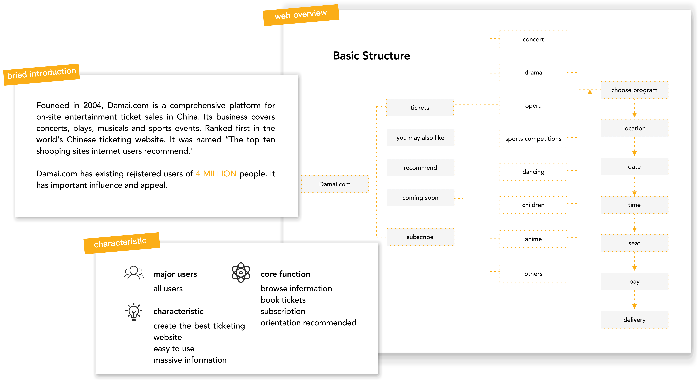
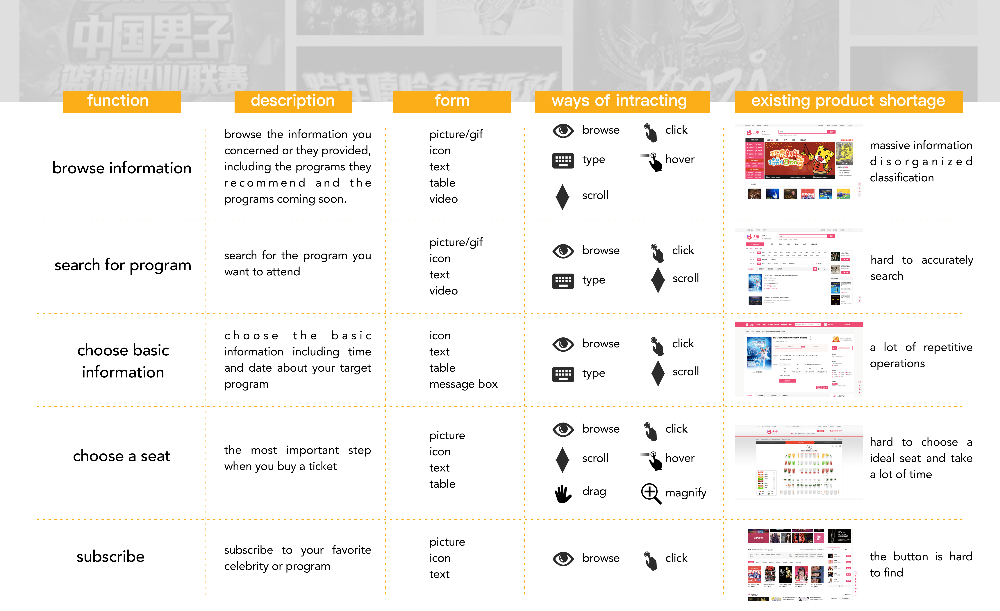
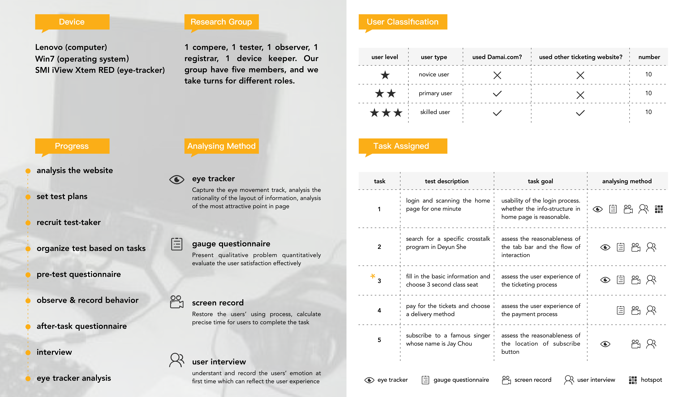
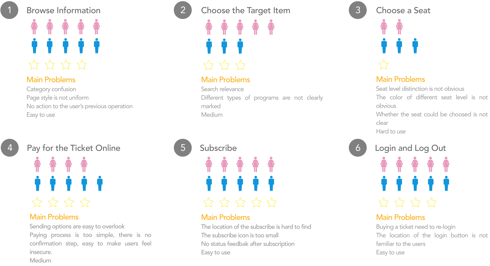

Usability Test
Team with Yun He, Baisong Ma
Beijing
Oct. 2016 - Dec. 2016
We conducted a usability test for damai.com. Damai.com is one of the most popular ticketing websites for people, but there are many problems with its usability. We first investigate the main function and architecture of the Damai.com. Then we conducted a user research. Set testing tasks for different functions of the website, recruited a number of representative users for usability testing. At last, the usability of the website was assessed through their eye track, eye movement hotspot and post-test interview results.
Preparing for the project, I needed to fully understand the websites major users, main functions, basic structure and so on.
I analyzed the main functions of the ticketing process. Including the intractive forms and some existing product shortages. The usability testing will focus on these functions to develop test tasks. The intraction problems esist in these functions will be find out.
After I fully analysis the structure of the Damai.com, I designed an eye tracker test to do the usability test, which could help me figer out the usability problem about Damai.com through an experiemntal-based convincing way.
In this part, I took test 3 as an example of the whole task report with some analysing statistics and graphic.
We analyzed the eye track and eye movement hot spot. Combined with the results of user interviews and questionnaire surveys, the usability of each task was analyzed. Mainly we evaluated from four aspects: Information Organization, UI Design, Interaction Design and Usability Degree.
